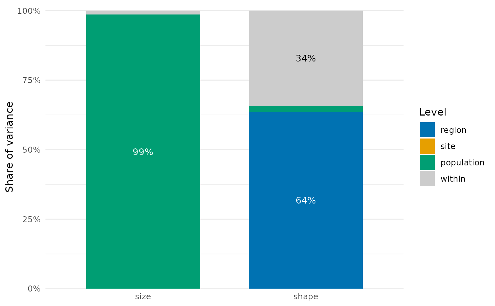

Plot the shares of variance across nested levels
Source:R/trait_variation.R
plot.nested_variance.RdDraws one stacked bar per trait with the share of variance of each level from
nested_variance(), the broadest level at the bottom and the variance within the finest
level (within, in grey) at the top. Needs the package ggplot2.
Usage
# S3 method for class 'nested_variance'
plot(x, min_label = 0.05, colours = NULL, ...)Arguments
- x
Result of
nested_variance().- min_label
Smallest share labelled with its percentage inside the bar; 1 or more removes the labels.
- colours
Colours of the levels, one per row of
x(the last forwithin), orNULL(the default) for the Okabe-Ito colours above and a light grey forwithin. With more than six factors,coloursmust be given.- ...
Not used.
Details
The levels take colours of the Okabe-Ito palette (Okabe & Ito 2008), which stay distinct for
the common forms of colour blindness, in an order that alternates darker and lighter colours
so that neighbouring segments also differ in grey scale: blue, orange, bluish green, reddish
purple, vermillion and sky blue. Yellow is left out because it hardly differs from the grey
of within and from a white background. Percentages are written in white on dark colours
and in black on light ones.
References
Okabe, M., & Ito, K. (2008). Color Universal Design (CUD): Colorblind Barrier Free. https://jfly.uni-koeln.de/color/
Examples
set.seed(1)
d <- data.frame(region = rep(c("north", "south"), each = 60),
site = rep(paste0("s", 1:6), each = 20),
species = sample(c("a", "b", "c"), 120, replace = TRUE))
d$population <- paste(d$site, d$species)
d$size <- c(a = 10, b = 20, c = 30)[d$species] + rnorm(120)
d$shape <- rnorm(120, rep(c(0, 2), each = 60))
plot(nested_variance(d, c("size", "shape"), c("region", "site", "population")))
